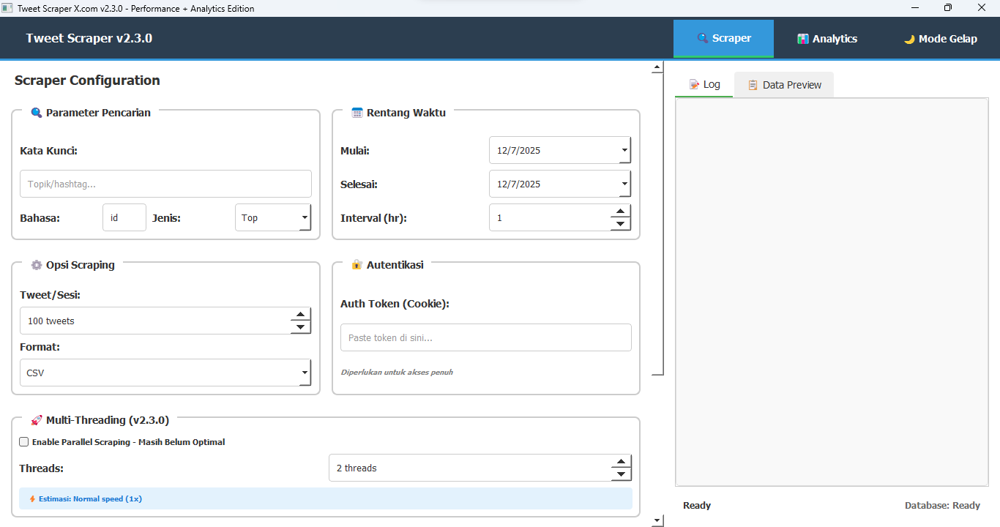

Aplikasi Desktop GUI untuk Scraping Data Tweet dengan Multi-Threading & Analytics

Tweet Scraper - Enhanced Edition adalah aplikasi desktop berbasis GUI yang powerful untuk mengumpulkan dan menganalisis data dari X.com (Twitter). Aplikasi ini dirancang untuk researcher, data analyst, dan digital marketer yang membutuhkan data tweet secara terstruktur.
Dilengkapi dengan interface yang user-friendly, multi-threading untuk performa optimal, dan berbagai fitur advanced seperti filter tanggal, deduplikasi otomatis, tracking progress real-time, serta ekspor data ke multiple format (CSV, JSON, Excel).
Scraping paralel dengan multiple threads untuk meningkatkan kecepatan hingga 5x lebih cepat.
Filter tweet berdasarkan rentang tanggal tertentu untuk mendapatkan data yang relevan.
Sistem otomatis menghilangkan data duplikat untuk memastikan data yang clean dan akurat.
Monitor progress scraping secara real-time dengan progress bar dan statistik detail.
Export data ke CSV, JSON, atau Excel sesuai kebutuhan analisis Anda.
Visualisasi data dengan charts dan statistik untuk insight yang lebih mendalam.
User memasukkan username/hashtag target, rentang tanggal, dan jumlah thread yang diinginkan.
Aplikasi membagi task ke multiple threads untuk scraping paralel yang efisien.
Data yang terkumpul diproses, divalidasi, dan dideduplikasi secara otomatis.
User dapat melihat preview data, analytics, dan export ke format yang diinginkan.
Solution: Implementasi smart delay system dan request throttling untuk menghindari rate limit dari X.com.
Solution: Menggunakan Selenium dengan explicit waits dan scroll automation untuk handle infinite scroll.
Solution: Implementasi thread-safe queue dan proper locking mechanism untuk koordinasi antar threads.
Solution: Batch processing dan periodic memory cleanup untuk handle large dataset tanpa memory overflow.
Analisis sentiment dan trend untuk riset pasar dan kompetitor analysis.
Pengumpulan data untuk penelitian akademis dan analisis sosial media.
Monitor mention brand dan customer feedback secara real-time.
Identifikasi trending topics dan viral content untuk strategy planning.
Download aplikasi dan mulai scraping data tweet dengan mudah